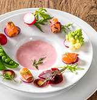

ライターのおすすめ
グルメキャンプのライター陣行きつけの最強グルメスポットを紹介！

究極の十割蕎麦
国から仕入れた蕎麦の実を、産地ごとの特性に合わせて挽き、持ち味を最大限に引き出す至高のそば。フレンチの技法も加えて繰り出されるSOBAコースは意外性に富んでいるが、実は基本に忠実な仕事がされています。香ばしい焼きそばがきもおすすめ。

ケバブだけじゃないトルコ料理
トルコ料理というと日本ではケバブやドントルマ（トルコ風アイス）くらいしか知られてませんが、実は世界三大料理の一つ。ハーブやヨーグルトを多用し、香辛料たっぷりのその味わいはまさに異国情緒。香味と酸味を中心に据えた味わいをご堪能ください。
ユーザーレビュー

サービスがいまいち。。。
レビューの高評価に期待して伺ったのですが、接客態度があまりに悪く印象は最悪。
確かにお料理は美味しかったですが、凝った仕事をしていても、そもそもどのような素材を利用してどんな調理法で供された物なのか一切説明がなかったので狐につつまれたような印象でした。



内装の美しさに感動！
以前から友人と話題に上っていたお店だったので楽しみにしていました。 ヴィンテージの家具や赤で統一されたモダンな内装。あらゆるディテールにミッドセンチュリーモダンを意識した作りでオーダー前にすでに満足！カフェメニューも充実していて、近くのパティスリーから仕入れているケーキも美味しゅうございました。


キャンプ太郎さん
男性・東京都
130pt
プレミアム